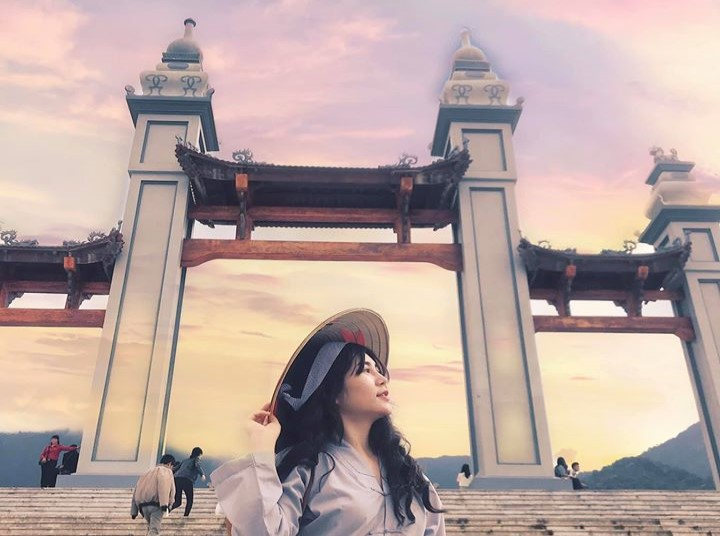
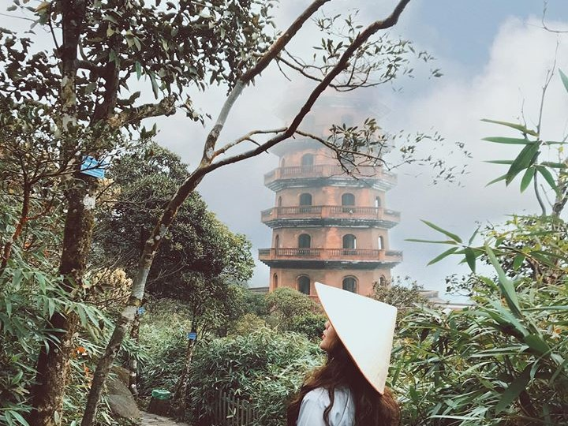
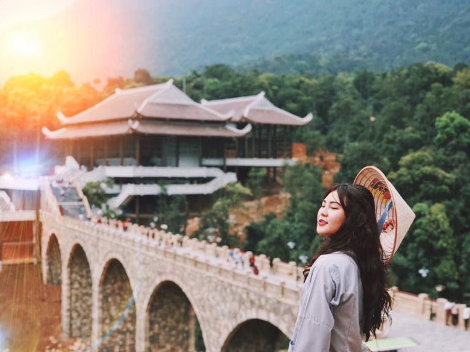
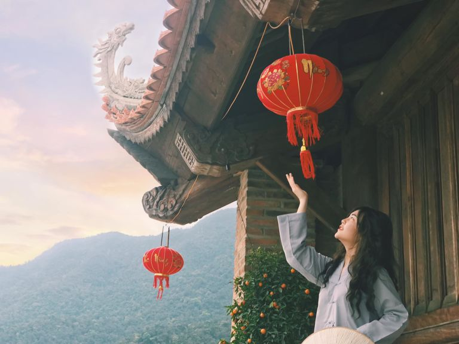

Tây Yên Tử


Tây Yên Tử nằm ở phía Tây dãy Yên Tử với vẻ hùng vĩ mang đậm nét đẹp huyền bí, linh thiêng của chốn thiền – nơi tu hành của Phật hoàng Trần Nhân Tông, trung tâm Phật giáo Việt Nam với Thiền phái Trúc Lâm Yên Tử.Hằng năm, khu bảo tồn này thu hút rất nhiều du khách cũng như nhiều tín độ đến hành hương và cúng bái mở ra một không khí lễ hội vô cùng náo nhiệt nhưng cũng không kém phần tôn nghiêm.

Thông tin chi tiết
| Địa chỉ | nằm tại sườn Tây và Bắc của dãy núi Yên Tử,thuộc địa bàn tỉnh Bắc GIang |
|---|---|
| Giờ mở cửa | 24/24 |
| Phí dịch vụ | Miễn phí |
- Hướng Dẫn Di Chuyển
- Di chuyển bằng xe máy hoặc ô tô riêng:
- Di chuyển bằng xe khách:
- Kinh Nghiệm Đi Tây Yên Tử Bắc Giang
- Cổng Trời
- Săn Mây Chùa Thượng
- Vạn Lý Trường Thành phiên bản Việt
- Chùa Đồng
Di chuyển đến Tây Yên Tử có thể bằng nhiều phương tiện. Lên được tới Tây Yên Tử sẽ rất khỏe. Từ Cổng vào của Tây Yên Tử, bạn có thể đi cáp treo với giá vé là 260.000 đồng/ khứ hồi/người chỉ mất 10 đến 15 phút để tới chùa Thượng và đi bộ thêm 30 phút là tới chùa Đồng để tham quan toàn bộ Tây Yên Tử. Hành trình từ Hà Nội đi Tây Yên Tử các bạn có thể tham khảo một số cách sau:
Từ trung tâm thanh phố Hà Nội, các bạn di chuyển qua Cầu Nhật Tân – Quốc lộ 18 (Bắc Ninh). Sau đó rẽ vào cao tốc Hà Nội – Bắc Giang. Hoặc từ Hà Nội, các bạn đi qua cầu Thanh Trì, Vĩnh Tuy, nối vào cao tốc Hà Nội – Bắc Giang. Rồi đi thằng tới Big C Bắc Giang thì đến tỉnh lộ 293. Từ trung tâm TP. Bắc Giang, các bạn cứ việc đi thẳng là đến Khu du lịch Tây Yên Tử, thôn Đồng Thông, xã Tuấn Mậu.
Bắt xe khách từ Hà Nội về bến xe Bắc Giang. Sau đó, ở bến xe Bắc Giang bắt xe số 07 đi khoảng 70km là tới thẳng cổng chùa. Giá vé xe bus là 55.000 đồng/ người, xe bus chuyến sớm nhất khởi hành lúc 5 giờ sáng. Chuyến tiếp theo vào 7h30 và sau đó mỗi chuyến cách nhau 40 phút, chuyến cuối lúc 19 giờ.
Không phải chỉ Đà Lạt mới có cổng trời đâu nhé, Bắc Giang cũng có đây nè. Chiếc cổng vào ngay khu vực chùa Hạ là một điểm đến đầu tiên trong hành trình khám phá Tây Yên Tử. Mùa này diện đồ ấm và checkin cổng trời như siêu phẩm Lạc Trôi sương khói mờ nhân ảnh của Sơn Tùng thì tuyệt cú mèo.
Mùa này khu vực chùa Thượng được bao quanh bởi rất nhiều mây. Thánh săn mấy đến chốn này cứ ngỡ bồng lai tiên cảnh. Không đi săn mây thì tiếc hùi hụi luôn nhé. Ngoài Chùa Thượng, chùa Bổ Đà cũng là điểm đến tham quan rất được nhiều người chú ý.
Lê đến khu vực này mà không checkin bức tường thành siêu đẹp của thời nhà Trần thì tiếc quá. Cuối năm rồi háo hức đi du lịch nước ngoài nhưng kẹt quá không đi được. Vậy thì không phải lo, cứ xách máy ảnh lên đây pose dáng “deep” vài pô là đẹp nhức nách luôn nha
Nếu đặc sản của Phượng hoàng cổ trấn là những ngôi nhà mái vòm điêu khắc và ngôi miếu treo đầy lồng đèn thì Chùa Đồng cũng đẹp không thua kém. Từ vị trí chùa Đồng, phóng tầm mắt xuống dưới chân núi sẽ có cảm giác phiêu lưu cực kì ấn tượng. Chính vì vậy, cuối tuần kéo nhau lên đây thư giãn thì tuyệt cú mèo luôn.
